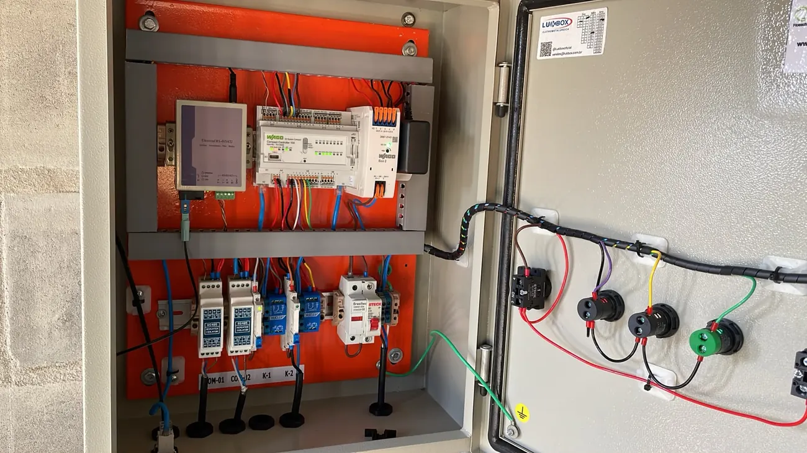
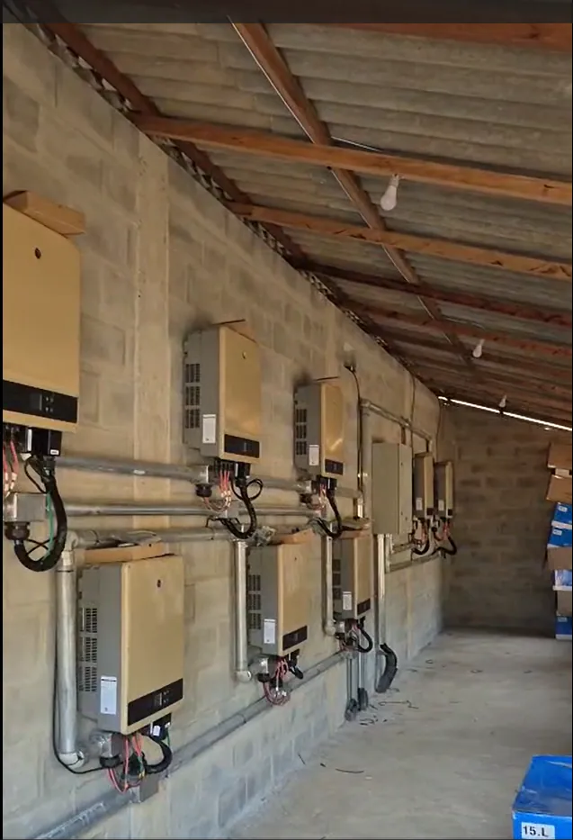
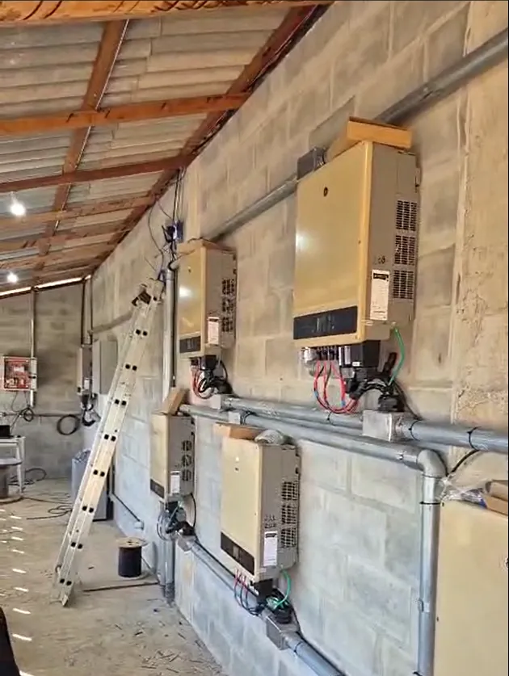

O controlador de exportação da HACON impede a injeção de energia na rede da concessionária e viabiliza a homologação de usinas de geração distribuída de qualquer porte — da baixa à média tensão, com marcas diferentes de inversores na mesma planta.
Da microgeração em baixa tensão à minigeração acima de 75 kW em média tensão, a concessionária exige comprovação de que não há injeção de energia. Sem o controle de exportação certo, o projeto não avança.
Regiões com alimentadores saturados onde a concessionária bloqueia novos projetos com injeção. A exportação zero é o caminho técnico para conectar mesmo assim.
A prova de não injeção é o coração do projeto de exportação zero. Sem um controlador confiável, cada parecer da distribuidora vira nota de reprova.
Usinas reais misturam fabricantes. A maioria das soluções não conversa com todos ao mesmo tempo — a da HACON, sim.
O controlador PPC-GD (SCRPI da HACON) mede o fluxo de energia no ponto de conexão com a rede e ajusta a geração dos inversores instantaneamente, garantindo que nada seja injetado na rede da concessionária — sem desperdiçar autoconsumo. Ele é um Power Plant Controller para geração distribuída: o SCRPI é o subconjunto de exportação zero dentro dessa arquitetura de controle de usina.
Monitora consumo e geração no ponto de conexão com a rede e identifica o sentido do fluxo de energia a cada instante.
Comanda cada inversor individualmente por algoritmo em tempo real para manter a injeção em zero.
Aproveita toda a potência disponível dos módulos para o consumo local, sem enviar excedente à rede.
Opera dentro dos parâmetros que cada distribuidora exige e entrega a comprovação de não injeção necessária para a homologação, conforme a norma técnica aplicável.

O PPC-GD reúne, num único quadro, a medição de referência, a comunicação com os inversores e a lógica de segurança que mantêm a injeção em zero.
A arquitetura foi validada em usinas reais — inclusive em plantas de grande porte conectadas em média tensão, com dezenas de inversores operando sob um só controlador.
Enquanto outras soluções funcionam para uma única marca de inversor ou só funcionam em baixa tensão, nosso controlador independe da marca e funciona também em média tensão.
Um controlador que gerencia marcas e modelos diferentes de inversor convivendo na mesma planta.
Do pequeno comércio em baixa tensão à minigeração acima de 75 kW em média tensão — nossa solução atende todos os portes de usinas e todas as concessionárias.

Planta de 550 kW conectada em média tensão, com dezenas de inversores operando sob um único PPC-GD em exportação zero.
Marcas e modelos distintos convivem na mesma planta, todos coordenados pelo controlador para manter a injeção em zero.
Na migração para o Ambiente de Contratação Livre, a autoprodução (APE) instalada junto à carga pode operar sem injeção. Isso dispensa a Alocação de Geração Própria na CCEE e simplifica o projeto — e é exatamente onde o controlador de exportação zero grid da HACON entra.
Para consumidores livres do Grupo A, a usina de autoprodução atende o consumo no local e o controlador garante que nada seja exportado para a rede da distribuidora.
Sem injeção, o arranjo de autoprodução evita a Alocação de Geração Própria, reduzindo complexidade regulatória na migração ao mercado livre.
Amplie a potência fotovoltaica dentro dos limites do transformador e do ponto de conexão, sem sobrecarregar a rede nem violar a demanda contratada.
Funciona com a energia comprada da comercializadora, maximizando o autoconsumo solar e a previsibilidade de custo do consumidor livre.
Feche mais projetos em redes saturadas e entregue a homologação sem retrabalho.
Amplie a geração e o autoconsumo sem violar os limites da concessionária.

Da medição no ponto de conexão ao comissionamento dos inversores, a solução é validada em campo.
Infraestrutura de eletrodutos, cabeamento e proteção executada conforme a norma técnica de cada distribuidora.
O PPC-GD (SCRPI da HACON) reúne medição de referência no ponto de conexão, comunicação determinística com os inversores e lógica fail-safe em um só controlador, com arquitetura de Power Plant Controller para geração distribuída.
Especificações de referência do PPC-GD (SCRPI da HACON). Parâmetros como classe de exatidão do ME/TCs, tempo de resposta do SCRPI e tempo de atuação em falha de comunicação são definidos no memorial descritivo, conforme a norma técnica de cada distribuidora (por exemplo, a GED-15303 da CPFL).
PPC-GD é o Power Plant Controller para geração distribuída da HACON. O SCRPI — o sistema de controle que garante a exportação zero — é um subconjunto dele. Na prática: é o controlador que mede o fluxo no ponto de conexão e comanda os inversores para impedir a injeção na rede.
Sim. O controlador HACON é independente de marca e opera com qualquer fabricante de inversor, inclusive com marcas diferentes convivendo na mesma usina.
Sim. O controlador opera tanto em baixa quanto em média tensão, atendendo desde a microgeração até a minigeração acima de 75 kW em geração distribuída.
Até 30 inversores em um único sistema, mesmo que sejam de marcas e modelos distintos.
Sim. A comprovação de não injeção é o ponto central da homologação de projetos de exportação zero. O controlador garante esse controle e entrega a documentação técnica que reduz retrabalho na aprovação.
Sim. Em arranjos de autoprodução (APE) instalados junto à carga no Ambiente de Contratação Livre, o controlador mantém a operação sem injeção na rede, o que simplifica o enquadramento na CCEE e a relação com a distribuidora.
Sim. A solução se integra a sistemas SCADA para supervisão e monitoramento contínuo da usina em tempo real.
Cada watt gerado trabalha para o consumo local — sem injetar na rede, sem desperdiçar energia.
Mais potência instalada dentro dos limites do ponto de conexão, com a segurança de não exportar para a concessionária.
Envie os dados da usina e receba uma proposta técnica do controlador multimarca da HACON para baixa ou média tensão.
Solicitar Proposta